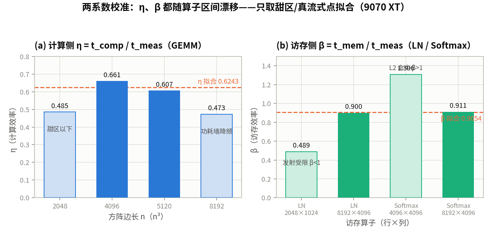
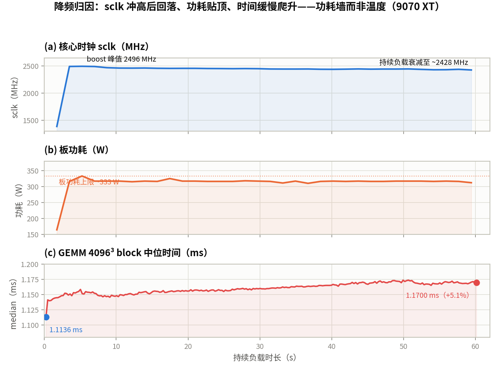
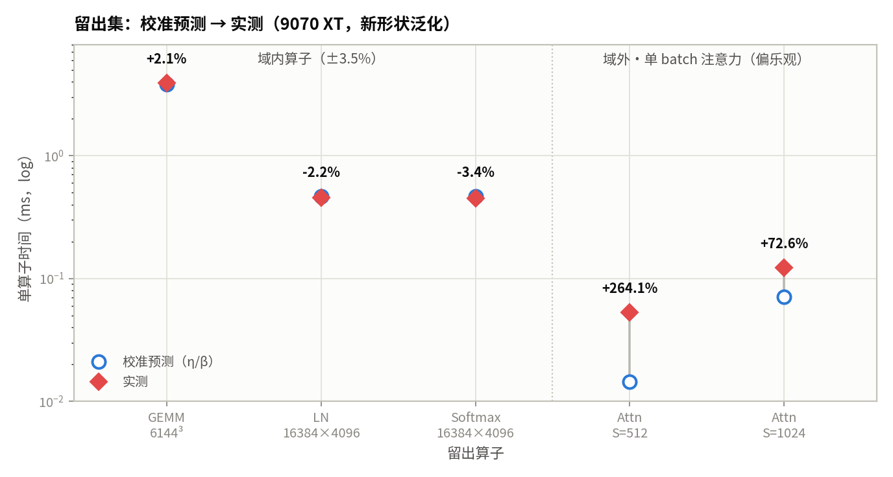
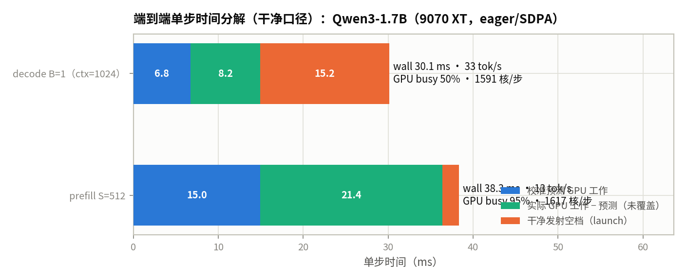

八组交互解释测量、校准与验证。实测数据与受控示意分别标注；不自动播放，不需要 GPU。
第 2 章 第一次真机 Profile 与性能校准
⚠️ Alpha内测版本警告 此为早期内部构建版本，尚不完整且可能存在错误，欢迎大家提Issue反馈问题或建议。
本章导读
本章第一次把模拟器预测带上真机：先跑通最小 Profile，再用校准集拟合修正系数，最后在留出配置上检验修正能否泛化。读完后，你应该能完成一次完整的"预测 → 实测 → 校准 → 留出验证"，并在没有 GPU 时知道该从哪条 CPU 参照线入手（§2.7）。
教学目标
- 能完成真机准入检查，并记录可复现的实验环境（硬件、驱动、ROCm 版本）；
- 能跑通第一次最小 Profile，确认 profiler 工具链可用；
- 能计算模拟器预测与真机实测的误差百分比，并用校准集拟合"模拟器修正系数"；
- 能在未参与拟合的留出配置上验证修正是否泛化，并逐项记录误差归因（降频、内存碎片、版本/架构不一致）。
本章的主线是把第 1 章的标称（η=1）下界，校准成带两个修正系数的真机模型：
名义模型（Ch1 冻结）： t_c = max( FLOPs / PEAK , Bytes / BW )
校准模型（本章拟合）： t_c = max( FLOPs / (PEAK·η) , Bytes / (BW·β) )
- η（计算侧系数）：compute-bound 算子的实测耗时相对
FLOPs/PEAK的倒数——kernel 实际跑到峰值的几分之几； - β（访存侧系数）：memory-bound 算子的实测耗时相对
Bytes/BW的倒数——实际跑到标称带宽的几分之几。
两个系数都不是"真机的一个常数"，而是随算子区间漂移的——这正是本章最重要的发现（§2.3），也是误差归因（§2.4）的入口。
2.1 真机准入检查
上任何 kernel 之前，先用 env_check.py 做一次准入检查并记录可复现的环境快照（产物 results/env_9070xt.json）。准入检查的价值不是"确认机器能用"，而是在测量开始前把工具链/架构的不一致暴露出来——否则它会在 §2.4 变成一条无法归因的误差。
环境与硬件快照（全部写入同一 schema，跨章对账）：
| 项 | 值 |
|---|---|
| GPU | AMD Radeon RX 9070 XT（gfx1201 / RDNA4），15.9 GiB |
| 同机第二卡 | RX 7900 XTX（gfx1100）——本章不用，实验固定走 HIP_VISIBLE_DEVICES=1 重映射为 device 0 |
| Python | 3.13.11 |
| PyTorch | 2.16.0.dev20261019+rocm10.1 |
| ROCm | 7.16.26385 |
| 驱动 | 6.16.13 |
| 系统 | Linux 6.14.0-37-generic（glibc 2.41） |
| 名义常数（Ch0/Ch1 冻结） | BF16 195 TFLOPS / 640 GB/s / 拐点 304.7 |
三项关键准入判定（checks 字段，all_ok=true）：
- profiler 工具链 —— 三个 AMD 工具分属不同用途，逐个确认可用性。ROCm 的 profiler 不是单一工具，准入检查逐个确认（
env_check.py）： -rocprofv3（kernel dispatch 追踪 + 可选 PMC 深计数器/ATT）：在 gfx1201 上可用——--kernel-trace实测能追踪并归属 kernel（§2.2，v1.4.1）。它是本章"看 kernel"的底座。 -rocprof-compute（原 Omniperf，roofline / 深硬件计数器）：profile模式不支持本机架构——支持列表是gfx908/gfx90a/gfx94x/gfx950/gfx115x，而本机是gfx1100 + gfx1201。所以大纲里写的"rocprof-compute profile跑通一个 kernel"在这张卡上不可用；要 roofline 深计数器应走rocprofv3 --pmc，而非rocprof-compute。 -rocprof-sys（原 Omnitrace，全系统 CPU+GPU 时间线）：本机不在 PATH（rocprof_sys_present=false）；本章也不需要（单 GPU 负载不需要全系统 trace）。 -torch.profiler（HIP activity）：跨架构兜底，用于进程内 e2e profile（§2.6）——它能直接嵌入 Python 会话，且不受rocprofv3子进程与transformers加载路径的 LLVM 冲突影响（§2.6 末）。 - RDNA perfmon 坑：gfx1100/gfx1201 的深硬件计数器在默认AUTO性能档下可能全部读成 0；此外 conda/TheRock 运行时 wheel 可能缺少无版本libhsa-amd-aqlprofile64.so。用rocprofv3 --pmc前需补 symlink 并锁定STABLE_STD/STABLE_PEAK。完整命令与验证见附录 F；本章主实验只用--kernel-trace，不依赖深计数器。 处理：本章以rocprofv3 --kernel-trace为"看 kernel"底座、torch.profiler做进程内 e2e、rocm-smi采样时钟/功耗。这是一条被准入检查主动捕获、而非在实验中途踩出来的"工具/架构不一致"（§2.4 的第三类误差来源）。 - SDPA backend 口径 —— 确认 repeat_kv 口径。等头 dense 输入（MHA 16/16）可用
FLASH / EFFICIENT / MATH（CUDNN不可用）；GQA 原始 dense 输入（16q/8kv）只可用FLASH / MATH，EFFICIENT / CUDNN被拒。即 Qwen3 的 GQA 必须先repeat_kv把 K/V 展开到 16 头再走 fused 路径——与第 1 章 §1.4 的 SDPA 口径一致，本章全部预测也按 repeat_kv 口径计数。 - 模型可加载可运行。Qwen3-1.7B（
/mnt/public/models）加载成功、prefill 前向 OK、decode 单步 OK；config 实测：28 层 / hidden 2048 / inter 6144 / 16 q 头 / 8 kv 头 / head_dim 128 / vocab 151936 /tie_word_embeddings=true。
空闲读数：温度 35°C、功耗 26 W、fclk 219 MHz——作为 §2.4 降频诊断的基线（"降频"必须是相对这个空闲态的负载后读数，而不是相对某个假设）。
2.2 第一次最小 Profile
跑通 profiler 的最小单元：单个 GEMM 4096³（bf16），做两个 profiler 的头对头，外加干净 baseline 与 CPU 发射读数（minimal_profile.py → results/minimal_profile_9070xt.json）。同一 GEMM、同一会话、同一张量、同一协议（warmup 10 + 50×3、event+sync、median）：
| 读数 | 条件 | 值 |
|---|---|---|
| A event 每迭代 + sync（无 profiler） | 干净 GPU 时间线时间 | 1.054 ms |
| B CPU enqueue 32 连发不 sync | CPU 发射一个 GEMM 的开销 | 0.0253 ms/iter |
C rocprofv3 --kernel-trace（event-in-trace） |
开 v3 后 event wall | 1.0665 ms → ×1.012 |
D torch.profiler（event-in-profile） |
开 torch 后 event wall | 1.0710 ms → ×1.016 |
两个 profiler 都只报 1 个 GEMM kernel/iter、Σ GPU self ≈ 1.036 ms（v3）/ 1.032 ms（torch）——kernel 计数与 GPU 侧耗时跨工具一致，差异只在测量扰动。这也直接验证了 rocprofv3 的 kernel dispatch 追踪在 gfx1201 上可用（§2.1 里不可用的是 rocprof-compute 的 profile 模式，不是 v3 的 kernel-trace）。
三个关键读数：
- A = 1.054 ms 是这一个 GEMM 的干净 GPU 时间线时间，对应 130.4 TFLOPS（= 峰值 195 的 ≈67%）——与第 1 章 §1.4 上卡锚定的 matmul 4096³（η_gemm≈0.67）跨章一致。
- B = 25.3 μs 是 CPU 发射一个大型 GEMM 的开销：单个大 kernel 的 enqueue 并不贵。这解释了为什么第 1 章的全模型 decode 会慢到 29 ms——那里是 1591 个 kernel 各发射一次（§2.6），发射成本随 kernel 数线性累加，而不是随单个 kernel 的大小。
- C/D 的膨胀系数都在 ×1.01–×1.02（v3 ×1.012 / torch ×1.016），差异在噪声量级。这就是 profiler 开销的本质：它是"每次 kernel 发射"的固定成本——对 1 个 1 ms 的大 kernel，这点固定成本被摊薄成 ~1%。早期脚本里"单迭代 torch.profiler ×1.9"是冷启动假象：新进入 profile 区域的第一次发射会触发 profiler 初始化（~1 ms 一次性开销）；把整套 warmup+samples 放进区域内取 median 后，真实 per-iter 开销就是 ×1.02。
结论：profiler 是"看"的工具，不是"计时"的工具——而且它的扰动量由 kernel 数决定。 两个 profiler 对单 kernel 负载的扰动都 ≈1%；但每次发射的固定成本随 kernel 数线性累加，所以在 §2.6 的 1591-kernel decode 上会被放大到 ×~1.9（§2.2 的 GEMM 只是"1 个 kernel"的特例）。因此：
- 任何"干净 wall"必须在无 profiler 的条件下单独测（§2.6 的 decode/prefill wall 都这样测）；
- 任何"GPU 侧 busy / launch 空隙"必须在同一个 profile 区域内同条件取（wall 与 Σ self 都在 profiler 下），不能拿 profiler 膨胀过的 Σ self 去减无 profiler 的 wall；
- 跨 profiler / 跨进程比较膨胀系数时，只有 compute-bound 负载（如 GEMM）的 wall 稳定、可比；launch-bound 负载的干净 wall 本身随 CPU 时钟态漂移，跨进程的 clean vs profiler 比值不干净。
这条"同条件纪律"贯穿 §2.6。
2.3 校准集：预测与实测对比
校准集全部先实测，再只取代表区间的点拟合系数（bench_cal.py → results/cal_9070xt.json）。协议同 Ch0 §0.3：warmup 10 + 50 样本 × 3 轮，逐迭代 event + sync，median，seed 42。
校准集覆盖三类算子（覆盖计算侧与访存侧）：
- GEMM（计算侧，η 的 size 曲线）：bf16 方阵 2048³ / 4096³ / 5120³ / 8192³；
- LayerNorm（访存侧）：2048×1024 / 8192×4096（dim=-1）；
- Softmax（访存侧）：4096×4096 / 8192×4096（dim=-1）。
逐点系数（η_point = t_comp / t_meas，β_point = t_mem / t_meas）：
| 算子 | 形状 | AI | 名义 t (ms) | 实测 median (ms) | 逐点系数 | 进拟合 | 非拟合点的归因（§2.4） |
|---|---|---|---|---|---|---|---|
| GEMM | 2048³ | 682.7 | 0.0881（compute） | 0.1817 | η=0.4848 | 否 | 计算甜区以下（小 GEMM 未饱和矩阵管线） |
| GEMM | 4096³ | 1365.3 | 0.7048（compute） | 1.0668 | η=0.6607 | 是 | — |
| GEMM | 5120³ | 1706.7 | 1.3766（compute） | 2.2671 | η=0.6072 | 是 | — |
| GEMM | 8192³ | 2730.7 | 5.6385（compute） | 11.9214 | η=0.4730 | 否 | 功耗墙降频（§2.4，单发大 GEMM 持续贴顶） |
| LayerNorm | 2048×1024 | 1.0 | 0.0131（memory） | 0.0268 | β=0.4891 | 否 | 发射受限（小算子未饱和带宽） |
| LayerNorm | 8192×4096 | 1.0 | 0.2097（memory） | 0.2331 | β=0.8996 | 是 | — |
| Softmax | 4096×4096 | 1.0 | 0.1049（memory） | 0.0803 | β=1.3061 | 否 | L2 命中（β>1，比 DRAM 下界还快） |
| Softmax | 8192×4096 | 1.0 | 0.2097（memory） | 0.2301 | β=0.9113 | 是 | — |

拟合口径（只取代表区间，避免把小尺寸/缓存/降频的偏离混进系数）：
η = Σ t_comp / Σ t_meas （GEMM 4096³ + 5120³，计算甜区两点，AI ≫ 305）
= (0.7048 + 1.3766) / (1.0668 + 2.2671) = 0.6243
β = Σ t_mem / Σ t_meas （LN 8192×4096 + Softmax 8192×4096，真流式两点）
= (0.2097 + 0.2097) / (0.2331 + 0.2301) = 0.9054
为什么不把 8 个点都拟合进去——因为非拟合点各自偏离，而偏离是可解释的，不是噪声：
- GEMM 的 η 在 size 轴上先升后降：0.4848（2048，小）→ 0.6607 / 0.6072（4096/5120，甜区） → 0.4730（8192，降频）。甜区在中间，两端各有一个独立原因（§2.4）。
- 访存侧的 β 跨算子跨度极大：0.4891（LN 小，发射受限）→ ≈0.9（真流式）→ 1.3061（Softmax 4096，β>1）。β>1 意味着实测比名义带宽下界还快——唯一的解释是 L2 命中减少了 HBM 流量，而这正是名义模型"Bytes = 未复用 HBM 流量"口径没有计入的部分。这样一个 β>1 的点若进拟合，会把带宽系数拉歪。
拟合结果：η = 0.6243，β = 0.9054（stored_at 先于留出实测，见 §2.5 留痕）。
2.4 误差归因
误差归因必须逐项落到"降频 / 内存碎片 / 版本架构不一致"三类之一，不能留"未解释残差"。本章用 diag_clocks.py（→ results/clock_drift_9070xt.json）+ §2.3 的非拟合点完成归因。
① 降频（本章主因）：功耗墙，而非温度。 方法是 GEMM 4096³ 的 fresh / sustained / hot 三段，负载期间后台线程每 1.5 s 用 rocm-smi 采样 sclk / fclk / 功耗 / 温度：
- fresh（空闲刚上卡，20 连发 median）= 1.11448 ms；hot（持续 60 s 负载后立即测）= 1.16668 ms；Δ = +4.68%；
- sclk：负载上来后约 5 s 内 boost 到峰值 2496 MHz，随后单调衰减到 ~2428 MHz（60 s 末）；
- 功耗：贴顶在 ~316–333 W（板功耗上限，峰值 333 W，首采样 164 W 是空闲→负载的过渡）；
- 温度：只从 53°C 温和爬升到 67°C（远未触及消费级卡的温度墙）；
- fclk：全程恒定 1889 MHz（fabric 时钟不受影响）；
- GEMM block-median：随 60 s 负载缓慢爬升 1.11363 → 1.17004 ms（+5.1%）——是缓慢漂移，不是阶跃。

判定：sclk 衰减而功耗钉死在板顶、温度仍温和 → 这是板功耗上限（power-cap）降频，不是温度降频。 它直接解释 §2.3 里 8192³ GEMM 的 η=0.473：8192³ 是体量最大、持续时间最长的单发 GEMM，全程贴着功耗墙，sclk 按上表的规律衰减，实际 FLOPS 低于 4096/5120 甜区 → η 掉到 0.473。+4.68% 的 fresh→hot 漂移是这一效应的直接量级，8192³ 的更大偏离是"单发就持续贴顶"的加强版。
② 内存碎片：排除。 60 s 负载前后 allocated 恒为 0.062 GiB、reserved 一次性从 0.062 → 0.172 GiB 后稳定，无随负载增长的趋势——不存在碎片导致的显存占用漂移。
③ 版本/架构不一致：准入已捕获。 §2.1 确认了三个 profiler 工具的可用性边界：rocprofv3 --kernel-trace 在 gfx1201 可用（本章"看 kernel"底座），rocprof-compute profile 不支持 gfx1201（深计数器改走 rocprofv3 --pmc + 强制固定性能档）。§2.2 的头对头还厘清了 profiler 开销的机制——它是每次 kernel 发射的固定成本（对 1 个 1 ms 大 kernel 摊薄成 ×1.01，v3 ×1.012 / torch ×1.016），而早期脚本里"单迭代 ×1.9"是新进入 profile 区域的第一次发射触发的一次性初始化（冷启动假象）。两者都是"测量工具与卡/版本"的产物，已在准入与最小 Profile 阶段显式记录并隔离（同条件纪律），不作为硬件特性混进 η/β。
2.5 留出验证
留出集验证"预测 → 修正 → 再预测"是否泛化。留痕纪律：留出预测在实测之前写入 JSON（holdout_prediction.stored_at = 2026-11-04T13:51:25Z，早于留出实测）——先看测量值再拟合只算回拟合，不算验证（Ch0 §0.3）。
留出集 = 新形状，均不在拟合点里：
- GEMM 6144³（计算侧，落在 4096 与 8192 之间）；
- LayerNorm 16384×4096 / Softmax 16384×4096（访存侧，更大的真流式形状）；
- 注意力 fused MHA16：S=512（AI=256 < 305 → 访存侧）与 S=1024（AI=512 > 305 → 计算侧），单次 SDPA 算子、16 头、不含层数因子——这是超出拟合域的压力测试。
| config | 绑定（按 AI） | 预测 (ms) | 实测 (ms) | 误差 | 逐点系数 | 域 |
|---|---|---|---|---|---|---|
| GEMM 6144³ | compute（AI 2048） | 3.8103 | 3.8921 | +2.1% | η 0.6112 | 域内 |
| LayerNorm 16384×4096 | memory（AI 1） | 0.4633 | 0.4529 | −2.2% | β 0.9261 | 域内 |
| Softmax 16384×4096 | memory（AI 1） | 0.4633 | 0.4475 | −3.4% | β 0.9372 | 域内 |
| Attn MHA16 S=512 | memory（AI 256<305） | 0.0145 | 0.0527 | +264.1% | 40.7 TFLOPS | 域外 |
| Attn MHA16 S=1024 | compute（AI 512>305） | 0.0706 | 0.1218 | +72.6% | 70.5 TFLOPS | 域外 |

读数分两半：
- 域内（GEMM / LN / Softmax 的新形状）：±3.5%。 逐点系数也贴合拟合值（η 0.611 vs 0.6243；β 0.926 / 0.937 vs 0.9054）——两个系数在拟合的同一 regime 内对新尺寸是稳定可泛化的。这是校准成功的那一半。
- 域外（单 batch 注意力）：+264%（S=512）/ +73%（S=1024），模型系统性偏乐观。 原因不是"算错了"，而是单 SDPA kernel 在 b=1 下利用率太低：S=512 只跑到 40.7 TFLOPS（峰值的 21%），S=1024 只到 70.5 TFLOPS（36%）——它既没饱和矩阵管线，也不是干净的访存流。η/β 是从饱和 GEMM 和流式 LN/Softmax 上学的两个标量，覆盖不了这个低利用率 regime。这正是校准集里"超出模型域的压力测试"要暴露的东西，也是后续章节做 batching（b>1 抬高注意力的 AI 与利用率）与融合（FlashAttention 改它的 Bytes）的屋顶线动机。
一句话：校准模型在它声明的域内（饱和计算 + 流式访存）泛化良好；离开这个域，它偏乐观——而偏乐观的方向（低利用率处）恰好是优化要发力的地方。
2.6 端到端模型运行与 Profile
跑通 Qwen3-1.7B（BF16，sdpa，repeat_kv 口径，B=1）的端到端推理与 Profile（profile_e2e.py → results/e2e_1p7b_9070xt.json）。用 §2.3 拟合的 η/β 做逐组件 GPU 侧校准预测，与干净 wall（无 profiler）和同条件 profile 三相对照。
测量协议：decode B=1、ctx=1024，warmup 10 + 50 × 3 轮，闭环 greedy 单 token（先用一次 ctx 长度 prefill 建 KV cache，之后每步只喂 1 个采样 token，测量窗口内不周期性 reset，保证单步 ctx 稳定、profile 窗口不含 reset）；prefill S=512，warmup 3 + 10 × 3 轮，单次前向恰好 S=512 token（与预测口径对齐）。profile 用 torch.profiler（进程内、同会话、同张量、同协议）。rocprofv3 --kernel-trace 在 §2.2 已验证可用，但全模型 decode/prefill 被 v3 子进程包裹时触发 LLVM 冲突而 SIGABRT（import transformers 的加载路径加载的第二份 LLVM，与 v3 注入的 LLVM 注册了同名命令行选项 → "CommandLine option registered more than once"）。故 e2e 的 kernel 级读数以进程内 torch.profiler 为准，v3 失败被捕获并留痕（profiler_overhead.rocprofv3_fullmodel_error），不静默吞掉。
| 项 | decode（B=1, ctx=1024） | prefill（S=512） |
|---|---|---|
| GPU 校准预测（Σ组件） | 6.754 ms | 14.965 ms |
| ├ GEMM（权重 / 权重×激活） | memory 5.938 | compute 14.472 |
| ├ Attention（repeat_kv） | memory 0.811 | memory 0.494 |
| └ Norms/elementwise（量级估计） | memory 0.005 | — |
| 干净 wall（无 profiler） | 30.116 ms | 38.332 ms |
| 吞吐 | 33.2 tok/s | 13.4 tok/s |
| kernels/步 | 1591 | 1617 |
| 实际 Σ GPU self | 14.943 ms | 36.402 ms |
| 干净 GPU busy（Σself / 干净 wall） | 49.6% | 95.0% |
| 干净发射空档（干净 wall − Σself） | 15.17 ms | 1.93 ms |
| Σself − 校准预测（未覆盖的 GPU 工作） | 8.19 ms | 21.44 ms |
torch.profiler 膨胀（同协议、同 fresh cache） |
×1.913 | ×1.528 |
rocprofv3 膨胀 |
N/A（LLVM 冲突，见上） | N/A |

干净 wall 拆三段，每段都可独立解释（§2.2 同条件纪律的用武之地；Σself 取自 torch.profiler，kernel 自身耗时与 profiler 无关，扰动全在 CPU 发射侧，所以它可当"干净 GPU 工作"用）：
- 干净发射空档（干净 wall − 实际 Σself）＝ GPU 在 kernel 之间的空档。decode 15.17 ms（busy 49.6%）≫ prefill 1.93 ms（busy 95.0%）。
- 实际 Σself 再拆两段：校准预测的部分 + 未覆盖部分（Σself − 预测）。decode 未覆盖 8.19 ms、prefill 21.44 ms——两个 phase 校准模型都低估了实际 GPU 工作约 2.2× / 2.4×（§2.5 域外效应在 e2e 规模的延续，下面看它来自哪）。
- §2.2 的教训在这里兑现：若拿膨胀后的 profile wall（decode 57.6 ms / prefill 58.6 ms）去减 Σself，会把 profiler 扰动（torch ×1.9 / ×1.5）误当成发射空档。旧口径里 prefill "发射空档 18.4 ms、busy 66.6%"就是这种混淆；干净口径下 prefill 发射空档只有 1.93 ms、busy 95.0%。
decode：发射受限 + 未建模 pointwise 核，双重主导。
- 发射受限（launch-bound）：干净 busy 只有 49.6%，一半时间 GPU 在等 CPU dispatch 1591 个 kernel（15.17 ms ÷ 1591 ≈ 9.5 μs/核，落在 §2.2 单核发射量级内——25.3 μs 是大 GEMM 的发射，decode 的小 kernel 更接近其下界）。与第 1 章 §1.4 的 T_launch / GPU 饥饿诊断同源，是 CUDA Graphs / compile / batching 要消的部分。
- 校准模型低估了实际 GPU 工作（8.19 ms）：top-kernel 表里，GEMM（
Cijk）实际 ≈ 6.95 ms/步 vs 预测 5.938（≈ −15%）、attention（flyc_attn_fwd）≈ 0.88 ms/步 vs 预测 0.811（≈ −8%）——这两者基本到位；缺口几乎全在 pointwise/elementwise 核（elementwise_kernel、reduce_kernel、CatArrayBatchedCopy、dtype 转换，合计 ≈ 7 ms/步），而模型只把它们粗略记成"norms 0.005 ms"量级。双系数模型只建模 GEMM/attention 的 roofline，不建模 pointwise 核的数量级——这是 §2.5 域外（低利用率、非纯 roofline 算子）的 e2e 版本。 - kernel 数由算子图驱动，不由序列长驱动：decode 1591 vs prefill 1617 几乎相同——同一套 28 层 × ~59 kernel/层 op 图。同 kernel 数、不同 per-kernel 工作量，才拉开 busy：decode 每核只算 1 token（活小）→ GPU 挨饿；prefill 每核算 S=512（活大）→ GPU 喂满。这是"decode GEMM 的 AI≈B"（第 1 章 §1.2）的真机具体化——batching 能把发射成本摊薄。
prefill：接近 GPU 饱和，缺口几乎全在校准模型，不在发射。
- 干净 busy 95.0%、发射空档仅 1.93 ms——1617 个 kernel 在 S=512 的较大 per-kernel 工作量下基本把 GPU 喂满，发射不再是瓶颈。
- 干净 wall 38.3 ms vs 校准预测 15.0 ms，缺口的 21.4 ms 几乎全是"未覆盖的 GPU 工作"（不是发射）：GEMM 在 M=512 下没到甜区（用甜区 η=0.6243 偏乐观，同 §2.5）+ pointwise 核数量级低估。含义：prefill 别急着上 CUDA Graphs（发射不是瓶颈），要先把 GPU 侧预测补准——形状相关 η + 建模 pointwise。
回扣主线：η/β 在饱和/流式算子上校准，正确预测了两个 phase 的 roofline 部分（GEMM/attention），但对 pointwise 核与低利用率 regime 系统性低估（decode Σself 是预测的 2.2×、prefill 2.4×）。干净 wall 在 decode 由发射 + 未建模双重主导（busy 49.6%）、在 prefill 接近 GPU 饱和（busy 95.0%）——两系数模型既不建模 T_launch、也不建模 pointwise 核，这正是后续章节的发力点：用 CUDA Graphs / torch.compile 消发射、用 batching / 融合 抬高 per-kernel 利用率、并把 pointwise 核的 roofline 补进预测。
2.7 CPU 参照线（无 GPU 学员的预测入口）
前面 §2.1–§2.6 全部在 9070 XT 上跑。本章补一条CPU 参照线，做两件成本低、教学价值高的事：① 量化"GPU 加速到底有多少"——同一个 GGUF、同一套参数，纯 CPU 与全层上卡各跑一遍，直接取 CPU→GPU 的 speedup；② 给没有 GPU 的学员一条可复现的 CPU 预测入口（呼应 Ch0 §0.2 无设备替代路径：第 1 章 Roofline、第 3 章显存账纯 CPU 即可完成，只缺本 §2.1–§2.6 的真机校准）。
方法（cpu_refline.py，产物 results/cpu_refline_9070xt.json）：llama.cpp 0.9.0-dev（build 1），同一 Qwen3-0.6B F16 GGUF（由 HF BF16 转出），llama-bench 默认双测（pp512 预填充 + tg128 逐 token 生成，batch=1），-r 5（另有 1 次内置 warmup）。CPU：-ngl 0（0 层上卡 = 纯 CPU）+ -t 12（物理核数；SMT 对 GEMM 帮助有限）；9070 XT：HIP_VISIBLE_DEVICES=1（容器内设备号 1）+ -ngl 999（全部层上卡）。取每条 median tok/s——首个实测 rep 有 warmup 凹陷（prefill 首样本可低近一半），median 对它免疫；decode 五次样本本身极紧（std 0.18 / 1.38 tok/s，CPU / GPU）。
同一 GGUF、同一引擎，CPU vs 9070 XT（median tok/s）：
| 阶段 | CPU（3900X 12 核，-ngl 0） |
9070 XT（-ngl 999） |
GPU 加速 |
|---|---|---|---|
| decode B=1（tg128） | 17.16 | 162.28 | 9.45× |
| prefill S=512（pp512） | 3344.53 | 29984.5 | 8.97× |
读这张表要分两个正交维度，不能混：
- 硬件维度（CPU→GPU，~9×）：同一引擎、同一 GGUF，纯 CPU 换成全层上卡，decode 与 prefill 都提速约一个数量级（9.45× / 8.97×，两者相近）。"GPU 加速到底有多少"的答案就是约 9×——且 prefill 和 decode 加速比接近，不是"decode 才快、prefill 一般"。CPU 侧 decode 17.16 tok/s 是无 GPU 学员在 0.6B 上能实测摸到的天花板：可复现、可预测（Roofline 对 CPU 同样成立，只是 ridge point 不同）。
- 软件维度（引擎差异，4.75×）：同一张 9070 XT 上，llama.cpp（融合 kernel + 全层上卡）decode 162.28 tok/s vs 第 1 章 torch sdpa eager（
attn_implementation="sdpa"，逐 kernel 发射）34.13 tok/s（decode-B1-ctx1024，median 29.30 ms，见 Ch1results/qwen_9070xt.json）——llama.cpp GPU 是同卡 torch eager 的 4.75×。这正是 §2.6 的 T_launch 诊断的软件侧印证：torch eager 每步 1591 个逐 kernel 发射把 GPU 饿到 ~42% busy，llama.cpp 的融合 kernel 路径消掉了大部分发射成本。引擎（调度 / kernel 融合）与硬件（CPU vs GPU）是两个正交维度：CPU→GPU 是 ~9×（硬件），llama.cpp→torch eager 是 4.75×（软件），二者相乘才解释"从 CPU torch 到 GPU llama.cpp"的总加速。
无 GPU 学员怎么走：本参照线 + Ch0 §0.2 的 T4 替代路径——第 1 章 Roofline 预测、第 3 章显存账本纯 CPU 可完成（本参照线就是它们的实测锚点），§2.1–§2.6 的真机 η/β 校准在 T4 下标注 pending: 真机，等真机到位后回填。协议与全部样本落 results/cpu_refline_9070xt.json，可重跑复现。
实验设计
- 模拟器实验（预测 → 校准闭环）：复用第 1 章标称预测，叠加本章 η/β 校准模型，逐组件输出 FLOPs/Bytes/AI/判定/t。核心动作是先留痕（stored_at 先于实测）→ 实测 → 拟合 → 留出验证，而不是"看实测再反推系数"。
- 真机实验（RX 9070 XT 16 GB 主线，
HIP_VISIBLE_DEVICES=1，协议 Ch0 §0.3：warmup 10 + 50 × 3、event+sync、median、seed 42；prefill warmup 3 + 10 × 3）： - 准入检查：
env_check.py→results/env_9070xt.json（含三 profiler 工具可用性 + rocprof-compute 架构不匹配、SDPA backend、模型 config 快照）； - 最小 Profile：
minimal_profile.py→results/minimal_profile_9070xt.json（GEMM 4096³ 的 A/B/C/D 四读数：干净 wall / CPU 发射 /rocprofv3/torch.profiler，双 profiler 膨胀系数头对头）； - 校准集 + 拟合：
bench_cal.py（cal 部分）→results/cal_9070xt.json（GEMM 4 + LN 2 + Softmax 2 实测，拟合 η/β）； - 误差归因：
diag_clocks.py→results/clock_drift_9070xt.json（fresh/sustained/hot GEMM +rocm-smisclk/功耗/温度采样）； - 留出验证：
bench_cal.py（holdout 部分）（GEMM 6144³ + LN/Softmax 16384×4096 + attn MHA16 S∈{512,1024}，预测先留痕）； - 端到端：
profile_e2e.py→results/e2e_1p7b_9070xt.json（Qwen3-1.7B decode B=1 ctx=1024 + prefill S=512，干净 wall + 同条件 profile + 逐组件校准预测）。 - CPU 参照线（§2.7，无 GPU 学员入口，llama.cpp 0.9.0-dev）：
cpu_refline.py（宿主侧，docker execllama-bench）→results/cpu_refline_9070xt.json——同一 Qwen3-0.6B F16 GGUF，默认双测（pp512 + tg128，batch=1，-r 5）：CPU（-ngl 0 -t 12）vs 9070 XT（HIP_VISIBLE_DEVICES=1 -ngl 999），取 median tok/s。产出 CPU→GPU 加速比（decode 9.45× / prefill 8.97×）+ 同卡引擎差（llama.cpp GPU 162.28 vs torch sdpa eager 34.13 tok/s = 4.75×，交叉参考 Ch1results/qwen_9070xt.json）。 - 闭环与交付：
- 预测（测前留痕）：第 1 章 nominal + 本章 η/β，
stored_at先于任何留出实测； - 实测（选点运行）：6 个
results/*.json，协议与 config 见 §2.1–§2.6； - 校准（解释误差）：η=0.6243 / β=0.9054 + 逐项误差归因（功耗墙降频 / 碎片排除 / 架构不一致）+ 留出域内 ±3.5%；
- 决策（提交）：第一条校准记录（校准参数 + 误差归因 + 留出验证 + 端到端 launch-bound 结论）。
本章小结
- 两系数校准模型：
t_c = max(FLOPs/(PEAK·η), Bytes/(BW·β))；η = 0.6243（计算侧，GEMM 甜区 4096³/5120³ 拟合）、β = 0.9054（访存侧，LN/Softmax 8192×4096 真流式拟合）。 - η/β 是随算子区间漂移的标量，不是真机的一个常数：η 在 GEMM size 轴上 0.48→0.66→0.47（甜区居中，小 GEMM 未饱和、大 GEMM 降频）；β 在访存算子上 0.49→0.90→1.31（发射受限 <1、真流式 ≈1、L2 命中 >1）。只取代表区间的点拟合，是让留出能泛化的关键。
- 误差归因三项：① 降频 = 功耗墙而非温度（sclk 2496→~2428 MHz、功耗钉死 ~333 W、温度仅到 67°C、GEMM 时间 60 s 内 +5.1% 漂移）——解释 8192³ GEMM η=0.473；② 内存碎片排除（allocated/reserved 稳定）；③ 版本/架构不一致（
rocprofv3 --kernel-trace可用、rocprof-compute profile不支持 gfx1201 → 深计数器走 v3 PMC；profiler 开销是每核发射的固定成本，单核 GEMM ×1.01、1591 核 decode ×1.9，须干净/同条件读取）——均在准入/最小 Profile 阶段主动捕获。 - 留出验证：域内（GEMM/LN/Softmax 新形状）±3.5%，逐点系数贴合拟合值；域外（单 batch 注意力）+264%/+73%，模型在低利用率处偏乐观——这正是校准集设计的压力测试，也是 batching/融合章节的动机。
- 端到端：校准模型正确预测了两个 phase 的 roofline 部分（GEMM/attention），但低估了实际 GPU 工作（Σself 是预测的 2.2×/2.4×，缺口几乎全在 pointwise 核）；干净 wall（decode 30.1 ms / prefill 38.3 ms）在 decode 发射 + 未建模双重主导（干净 busy 49.6%、1591 核/步）、在 prefill 接近 GPU 饱和（busy 95.0%）——两系数模型既不建模 T_launch、也不建模 pointwise 核，CUDA Graphs / compile + batching 才是消它的路径。
- CPU 参照线（§2.7，无 GPU 学员入口）：同一 Qwen3-0.6B F16 GGUF、同一 llama.cpp，纯 CPU（3900X 12 核）vs 9070 XT 全层上卡，decode 9.45× / prefill 8.97×——"GPU 加速"约一个数量级且两 phase 相近；同卡 llama.cpp GPU 又比 torch sdpa eager 快 4.75×（§2.6 T_launch / 融合 kernel 的软件侧印证）。硬件（CPU→GPU）与软件（引擎）是正交的两维，无 GPU 学员用本线 + Ch0 §0.2 T4 替代路径（Ch1/Ch3 纯 CPU 可完成，真机 η/β 校准标
pending: 真机）。 - 交付：
code/part1-modeling/chapter2/下 7 个脚本 + 7 个results/*.json+figs/make_figs.py+ 4 张中文配图。
延伸阅读
- 本书第 0 章：§0.3 统一测量协议（warmup/样本/median/留痕纪律）、§0.4 证据级别、§0.5 纸面实验底稿与"先预测再实测"纪律。
- 本书第 1 章 §1.4 上卡锚定：T_launch / GPU 饥饿诊断（本章 §2.6 的发射受限结论直接承接它），以及 SDPA / repeat_kv 口径。
- 本书第 7 章（continuous batching）与第 9 章（PD 分离）：本章"发射受限 + 低利用率"结论的落点——batching 摊薄发射成本、抬高 attention 利用率，PD 分离把两种硬件 regime 拆开调度。
- 本书第 3 章（显存账）：容量维度（什么放得下），与本章的速度维度（多快）互补。
- llama.cpp
llama-bench（§2.7 CPU 参照线工具：pp512/tg128 默认双测、-o json、-ngl/-t/-r；Qwen3-0.6B F16 GGUF 由 HF BF16 转出）——无 GPU 学员的 CPU 预测入口。 - AMD
rocprofv3文档（kernel dispatch 追踪，gfx1201 可用；--pmc深计数器需稳定性能档，见附录 F）/rocprof-compute（roofline 微架构计数，build 3.8.0 尚不支持 gfx1201）；PyTorchtorch.profiler（HIP/CUDA activity，跨架构、可进程内嵌入）。 - Williams, Waterman & Patterson, "Roofline," CACM 2009（η 作为 kernel 效率、屋顶线的效率语义）；Dao et al., "FlashAttention," 2022（§2.5 域外 attention 的融合动机）。
- hello-gpu / hello-rocm（datawhalechina，GPU/ROCm 基础参考写法）。 https://www.ccs.tsukuba.ac.jp/wp-content/uploads/sites/14/2025/09/20.-Newer-tools-ROCprof-Trace-Decoder-and-Omnistat.pdf